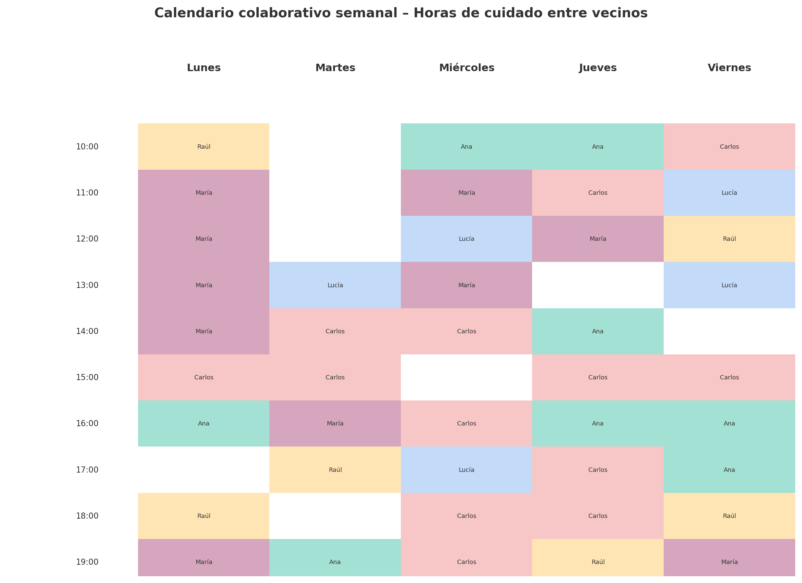

Vecinos que Cuidan
Red local de apoyo y compañía entre personas cuidadoras. Combatimos la soledad y el aislamiento de quienes cuidan sin descanso, con soluciones reales y humanas.
Quiero saber más
Red local de apoyo y compañía entre personas cuidadoras. Combatimos la soledad y el aislamiento de quienes cuidan sin descanso, con soluciones reales y humanas.
Quiero saber másSomos una red de vecinos y vecinas que comparten tiempo, compañía y apoyo para personas cuidadoras no profesionales, ofreciendo soluciones que nacen del propio barrio. Así, quienes cuidan no se sienten solas ni invisibles, y pueden encontrar apoyo cercano y flexible.
La participación es flexible, humana y siempre acompañada.
El calendario semanal permite a cada vecino/a ver quién ofrece ayuda en cada franja, facilitando el intercambio y asegurando descansos. Así, se evita la sobrecarga y se fomenta la corresponsabilidad.
"Gracias a la red, he podido tener tiempo para mí, hablar con otros en mi situación y sentirme menos sola. Ahora cuidar no significa renunciar a mi vida."
– Marta, cuidadora joven
"Pensé que nadie valoraba lo que hacía, pero con Vecinos que Cuidan me he sentido acompañado y entendido. Compartimos el peso y las alegrías."
– Manuel, cuidador mayor


Déjanos tus datos y te contactaremos para resolver cualquier duda o invitarte a nuestras próximas reuniones.
O escríbenos a: fsanchezt@yahoo.es